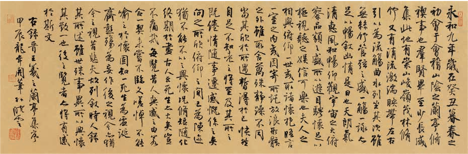

兰亭集序
永和九年，岁在癸丑，暮春之初，会于会稽山阴之兰亭，修禊事也。 群贤毕至，少长咸集。此地有崇山峻岭，茂林修竹；又有清流激湍，映带左右，引以为流觞曲水，列坐其次。 虽无丝竹管弦之盛，一觞一咏，亦足以畅叙幽情。
是日也，天朗气清，惠风和畅。仰观宇宙之大，俯察品类之盛，所以游目骋怀，足以极视听之娱，信可乐也。
夫人之相与，俯仰一世，或取诸怀抱，悟言一室之内；或因寄所托，放浪形骸之外。 虽趣舍万殊，静躁不同，当其欣于所遇，暂得于己，快然自足，不知老之将至。及其所之既倦，情随事迁，感慨系之矣。 向之所欣，俯仰之间，已为陈迹，犹不能不以之兴怀。况修短随化，终期于尽。古人云：“死生亦大矣。”岂不痛哉！
每览昔人兴感之由，若合一契，未尝不临文嗟悼，不能喻之于怀。固知一死生为虚诞，齐彭殇为妄作。 后之视今，亦犹今之视昔。悲夫！故列叙时人，录其所述，虽世殊事异，所以兴怀，其致一也。后之览者，亦将有感于斯文。
《兰亭集序》又称《兰亭宴集序》《兰亭集序》《临河序》《禊帖》《三月三日兰亭诗序》等，是东晋王羲之所作的一篇序文， 文章记叙了东晋永和九年（353年）三月三日，王羲之和谢安、孙绰等四十一位名士在山阴兰亭举行的一场旨在“修禊”的集会， 会上各人做诗，王羲之为他们的诗写的序文手稿。其文书法具有极高的艺术价值，与颜真卿《祭侄季明文稿》、 苏轼《寒食帖》并称三大行书书法帖。
